Sobre
Skullgirls é um jogo de luta 2D para consoles e também Windows com um estilo visual único. O game é capaz de rivalizar com séries famosas japonesas, como Guilty Gear e o recente BlazBlue. O jogo também vai além dos socos e chutes e apresenta uma história, que explica quem são os personagens e como conseguiram suas habilidades e poderes, dando um pouquinho de mais profundidade ao conteúdo. Skullgirls é situado no Reino de Canopy, onde oito jovens guerreiras devem lutar para conquistar um artefato que garante desejos, o “Skull Heart”, da monstruosa Skullgirl – um trocadilho em inglês com as palavras ‘caveira’ e ‘colegial’. Uma lenda conta que, a cada sete anos, este misterioso Skull Heart concede um desejo a uma jovem, mas por um preço: se o seu coração for impuro, seu desejo será distorcido e ela se transformará em uma Skullgirl. O estilo do jogo lembra um pouco uma mistura dos gráficos em alta de resolução e estilo de batalha de BlazBlue, mas com uma pitada dos movimentos e estilo de Marvel vs Capcom e talvez um pouco de Darkstalkers. O melhor de vários mundos em um único jogo é uma premissa que promete. O título tem uma jogabilidade bem voltada para momentos competitivos, onde cada golpe pode ser certeiro ou não, dependendo muito a habilidade do jogador. É preciso saber onde aplicar cada golpe e em qual momento parar para se defender, sem subestimar o adversário. Há modos de multiplayer, treino e outros, mas também é possível encarar a história e descobrir mais segredos por trás das misteriosas Skullgirls. Confira este diferente game de luta no seu computador! Faça o download de Skullgirls e divirta-se!
Alguns personagens e historias
Valentine-
Valentine é a única sobrevivente do Último Esperança, um grupo de agentes especiais dos Laboratórios Anti-Skullgirls.
Antes de serem exterminados pela Skullgirl,o Último Esperança trabalhava para o misterioso Laboratório Zero e realizava tarefas desde reconhecimento e sabotagem até pesquisa avançada.
Dália Negra-
Dália Negra é a assasina e braço direito de Lorenzo Medici.Ex-agente dos Laboratórios Anti-Skullgirl,ela foi mortalmente ferida décadas atrás em um confronto com uma skullgirl e reconstruída com tecnologia cibernética experimental.
A experiencia a deixou com uma sede de sangue insaciavel e fascinada pelo desespero e sofrimento dos outros.Ultimamente,Dália se ve entedida com seu empregador e atraida pelas emoçoes proibidas que apenas o Coraçao-Caveira pode proporcionar...
Peacock-
era originalmente uma garota humana com o nome de Patricia Watson que foi transformada em uma arma biomecânica anti-garota de caveira pelo Dr. Avian . Seu arsenal consiste no Sistema Argus, um parasita sintético , e sua "gangue" que inclui a Unidade Avery , Andy Anvil , Tommy Ten-Ton , George Bomb e Lonesome Lenny .
Ms furtune-
Uma feroz felina, Nadia Fortune é a última sobrevivente da Gang Fishbone, um notório grupo de ladrões daglanianos.
Sua última missão terminou em tragédia: uma tentativa fracassada de roubar a misteriosa Life Gem de Lorenzo Medici resultou em seus assassinatos brutais.
Antes de conhecer sua própria desgraça, a Sra. Fortune engoliu a Life Gem e conseguiu digeri-la. O poder da Gem imortalizou todo o seu corpo, tornando-o verdadeiramente imortal mesmo depois de ser desmembrado.
Agora, escondida nas sombras de Little Innsmouth, a Sra. Fortune planeja vingar seus camaradas caídos.
Big Band-
intenção da Skullgirl atual para a morte de toda a família Medici, ele começa seu objetivo de rastreá-la, investigando o Casino River King , um local famoso para a máfia Medici.
Lá ele é saudado por Cerebella , erroneamente acreditando que sua intenção era causar danos aos Medici.
Apesar de Big Band ' S tentar sair cortesmente tendo notado não havia nenhuma evidência do Skullgirl, ele é forçado a lutar Cerebella.
Depois de vencer, ele comenta como ele já não deseja desperdiçar o Medici como ele usou também.
Big Band, em seguida, recupera um sinal de socorro do Dr. Avian alertando-o que Lab 8 está sob ataque.
Percebendo como isso era provavelmente um set-up pela Skullgirl, ele retorna ao laboratório imediatamente para encontrar o lugar destruído na presença de um misterioso doppelgänger de si mesmo.
Depois de lutar contra eles descobre que foi Double, que deixa posthaste. Depois de descobrir que o Dr.
Avian foi morto no incidente, ele procura brevemente evidências sobre quem infiltrou o laboratório - encontrar um bisturi que não é do médico e refletir sobre como a pessoa em questão deve ter conhecido seu caminho em torno de um laboratório
Partindo para encontrar os sobreviventes do Laboratório 8 através de uma rota de fuga, Big Band encontra uma provação entre o grupo Lab 8 envolvendo Peacock tentando sair e derrotar o Skullgirl sozinho. Apesar da oferta de Big Band de tirar o Skullgirl juntos, Peacock e Avery rudemente demiti-lo e tentar combatê-lo. Perdendo, Peacock consegue escapar de qualquer maneira, ordenando Tommy para nocauteá-lo. Em seguida, torna-se missão Big Band para localizar Peacock, Skullgirl e assassino do Dr. Avian.
E tem muito mais, mas como eu estou cansada de escrever, nao vou colocar agora.
Algumas artes
 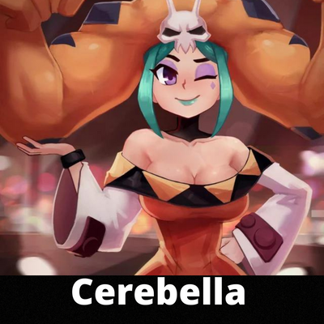
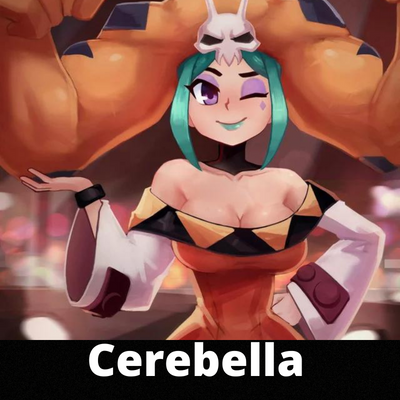
 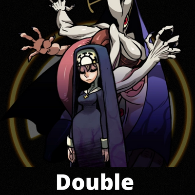
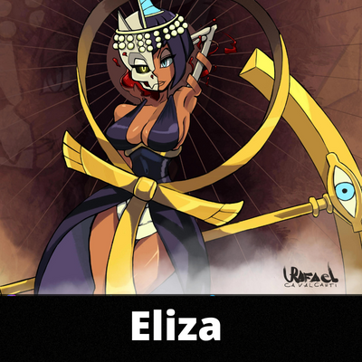
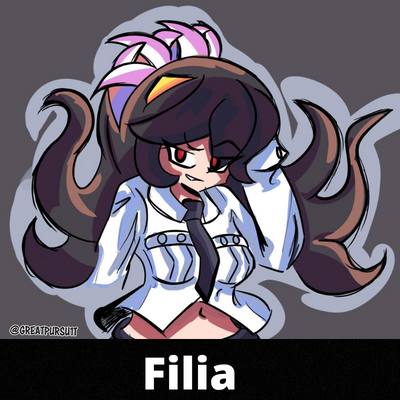
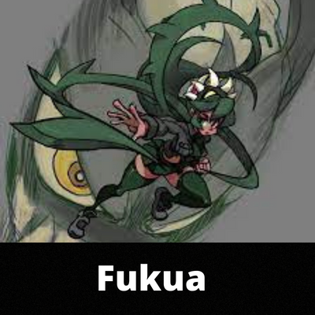
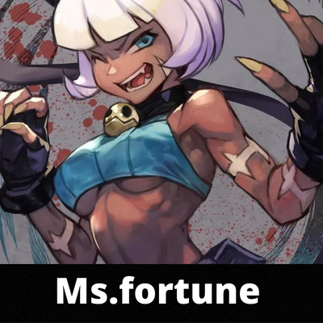
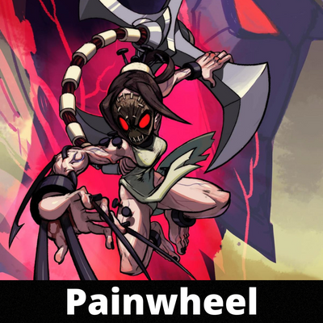
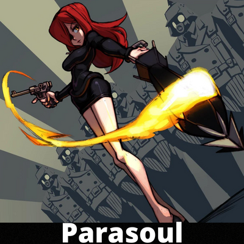
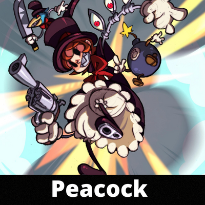
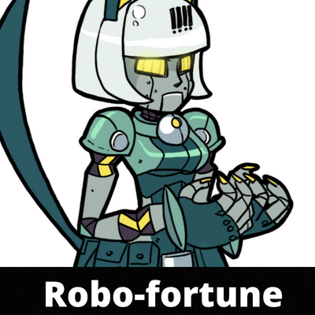
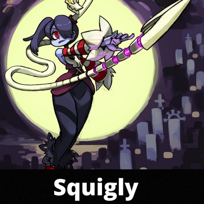
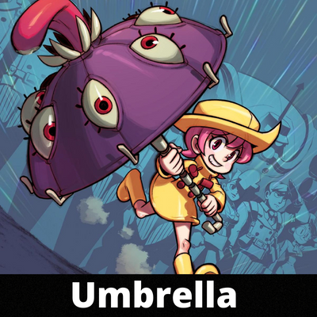
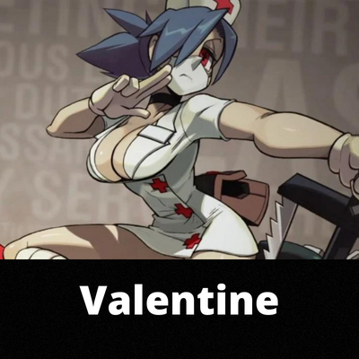
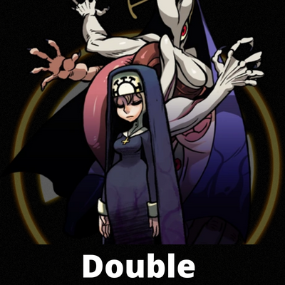
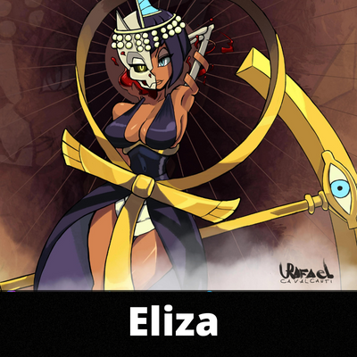
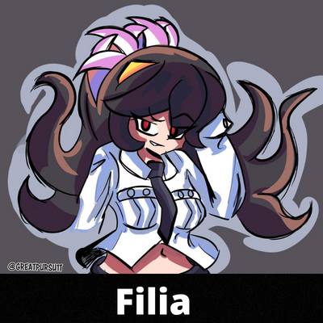
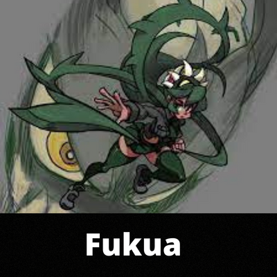
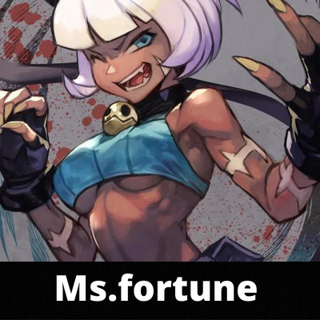
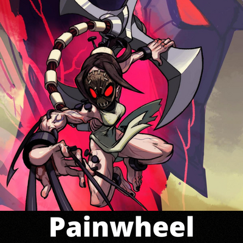
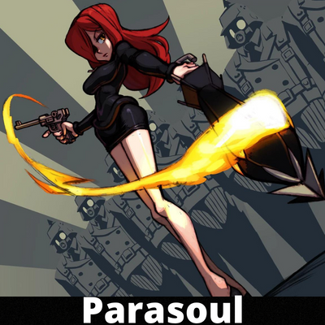
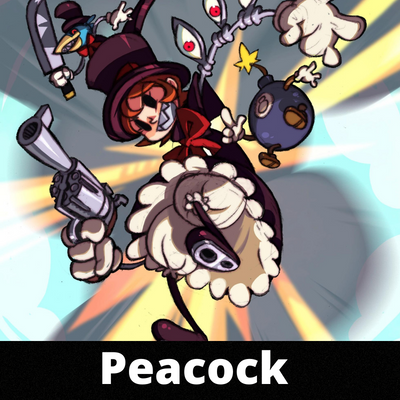
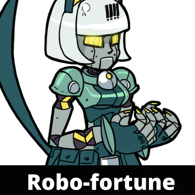
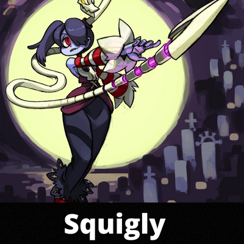
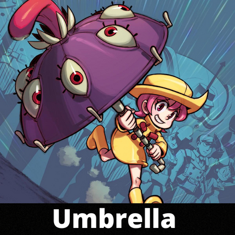
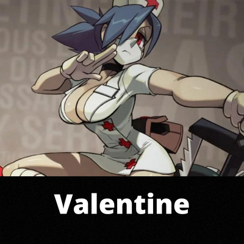
Curiosidade
Oi ,entao só para aviza o video esta em espanhol,ok.